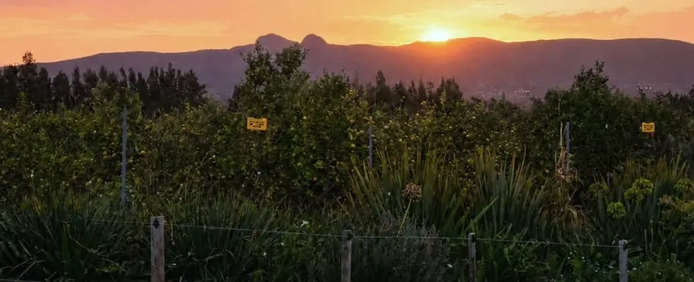
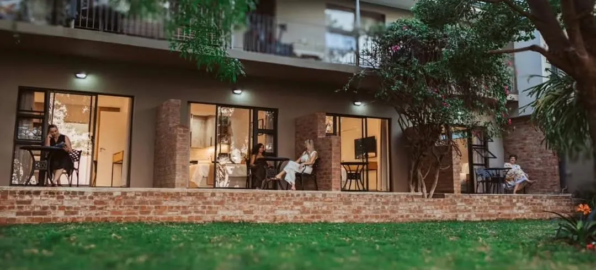

( Cape Winelands )
Taste, explore and wander nearby
Wine farms, mountain trails, Franschhoek and Winelands wedding venues, all just down the road.
Close to Lindani
Drive times are approximate from the farm. Tap a place to open it on the map.
- 10 min
Avondale
Organic wine estate with an eco-safari and Faber restaurant. - 13 min
Klein Parys Vineyards
Wine tasting and a relaxed estate on the edge of Paarl. - 14 min
Nederburg
One of the Cape's best-known wine estates, on the Paarl side of the valley. - 15 min
Vendôme
Historic wine estate and wedding venue on the Berg River. - 15 min
Laborie
A historic Paarl estate among the vines, with a restaurant, wedding venue and the Paarl Trails. - 20 min
Spice Route
Wine, craft beer, chocolate and good food on one hilltop estate. - 25 min
Rhebokskloof
Lakeside lawns and mountain views, one of the best-known wedding venues near Paarl. - 14 min
Paarl Main Street
Shops and restaurants along the town's oak-lined main road. - 17 min
Du Toitskloof Pass viewpoint
Big views back over the Paarl valley from the pass above the farm. - 20 min
Du Toitskloof hiking trails
Mountain trails from the Kromrivier and Elandsrivier trailheads. - 20 min
Paarl Rock and Paarl Mountain
The granite domes of the Paarl Mountain Nature Reserve, with walks through fynbos. - 15 min
Playrock Adventure Park
Outdoor adventure park for children on the Wemmershoek road. - 25 min
Drakenstein Lion Park
A sanctuary for rescued lions that can't return to the wild. - 15 min
Boschenmeer Golf Estate
Eighteen holes in Paarl with mountain views. - 30 min
Franschhoek
The valley of restaurants and wine farms, an easy drive over the hill. - 13 min
Akademia (Paarl campus)
A quiet base for parents visiting students in Paarl. - 14 min
La Rochelle Girls' High
Close enough for sports days, concerts and long weekends. - 14 min
Paarl Boys' High
Close enough for derby days, sports and school events. - 16 min
Boland College
An easy drive into Paarl. - 16 min
Green School South Africa
In the valley, near Paarl. - 19 min
Paarl Gymnasium
Across town in Paarl. - 30 min
Stellenbosch University
Half an hour away, for visits to students in Stellenbosch.

( Weddings · groups )
Book the whole farm
In town for a Winelands wedding, a reunion or a family birthday? Take all four studios: they sleep up to eight, with the pool, vineyards and braai area to yourselves.
Check the dates( Book direct )
Your Winelands base starts here
See live availability and book instantly on NightsBridge, our booking calendar. Or call or WhatsApp reservations on 063 678 2359.